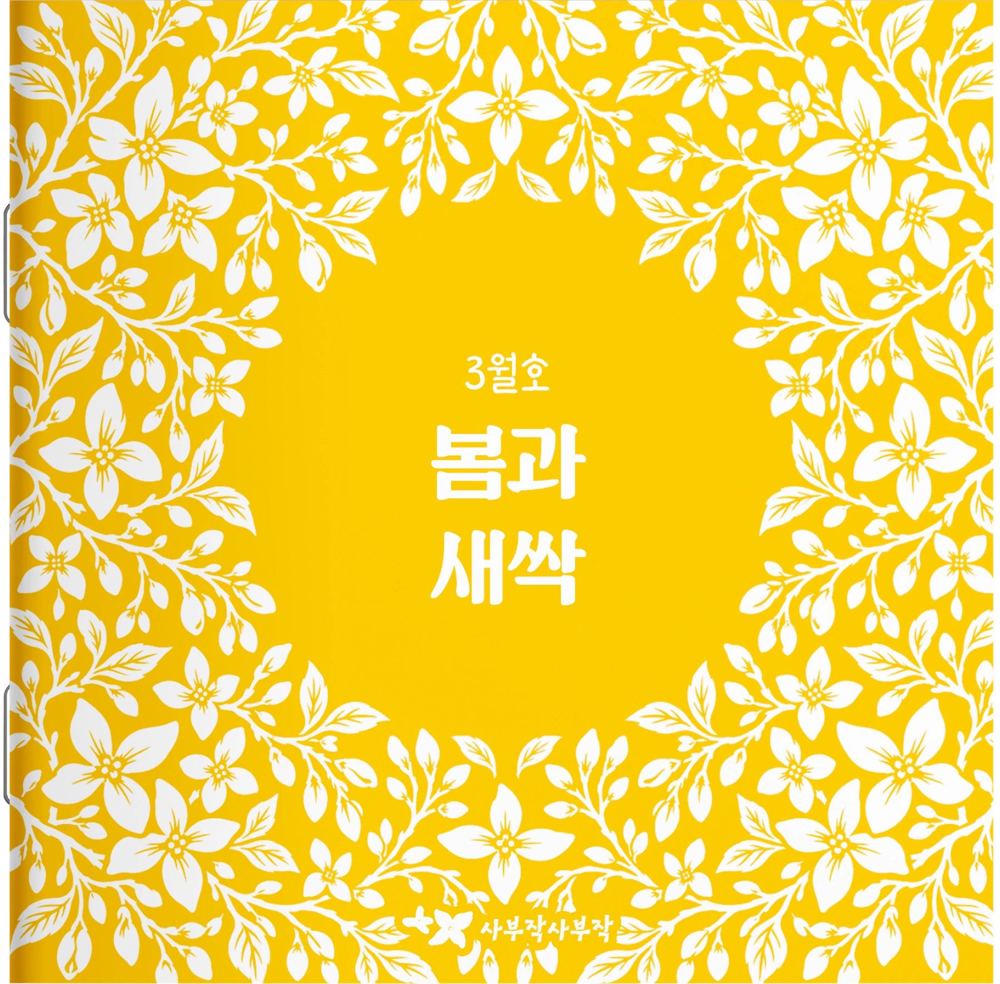

BRAND STORY
한 사람의 일상을
바라보는 일에서
시작되었습니다.
사부작사부작은 제작자의 할머니를 보며 시작되었습니다. 반복되는 일상 속에서 무료해하시던 할머니는 미술 활동을 하는 날이면 유난히 즐거워하셨습니다.
직접 만든 작품을 한참 바라보며 뿌듯해하시고, 마음에 드는 작품은 집 안 곳곳에 걸어두셨습니다. 작품 하나가 하루의 표정을 바꾸고, 내가 만든 무언가가 작은 자랑이 되는 모습을 보았습니다.
그 경험에서 사부작사부작이 시작되었습니다.제작자의 할머니와 나눈 실제 대화에서
“옛날엔 글씨도 참 예쁘게 잘 썼는데…”
“할머니 어릴 때는 고무줄 놀이가 그렇게 재밌었어.”
“심심해도 뭐 할 수 있는 게 없어.”